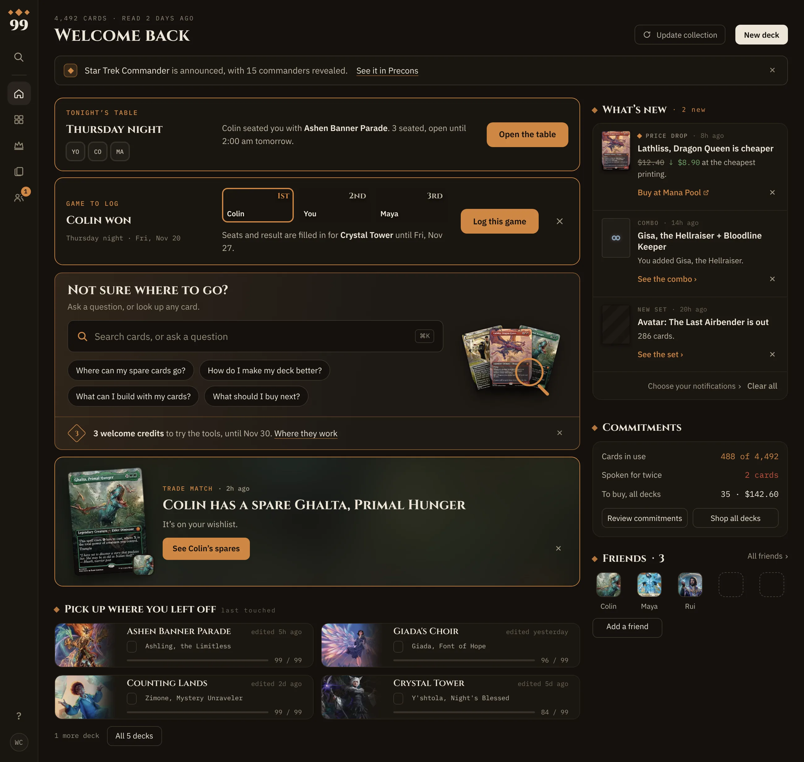

R7 A (left) against R8 (right), the same reader. R8 moves What's new into the empty desktop rail and makes Home's section headings easy to find.
11 · A calmer busy Home (R8, on top of R7 A)
The desktop rail fills with the news. What's new moves to the top of the right rail, above Commitments and Friends. Every notification is now in the first screen (the lead in the main column, the rest beside it), the rail's empty space is gone, and the main column ends at the decks, about 330px shorter. In the rail a row draws as on a phone (the action under the text); Choose your notifications moves into the list's foot beside Clear all, so the heading stays one line.
Section headings you can find. Every Home section heading (What's new, Pick up where you left off, Friends, Commitments) moves from 10px faint mono capitals to the page's display face at 17px in --fg, led by the accent diamond the app already uses as its mark. Counts stay mono, in --accent-text. 10px more room above each. The deck list's last touched caption stays from sm and leaves on a phone, where it wrapped the heading.
Phone: the order stays R7 A (table, game to log, panel with credits, lead, What's new, decks, Friends, Commitments). It is still a long page on a busy day; the headings are what make it scannable. Not drawn, possible later: What's new showing two rows on a phone with Show all.
Settled in R7: Q11 A (credits in the panel, What's new under the lead) and Q12 A (no search on first run).
Q13 · Move What's new into the desktop rail?
A: yes, top of the rail, rows drawn as on a phone, Choose your notifications in the list's foot (drawn). B: keep it in the main column under the lead (R7 A), the rail as shipped.
Recommended: A. It uses the empty rail, puts every notification in the first screen, and shortens the main column.
Q14 · Stronger section headings on Home?
A: display face 17px, --fg, the accent diamond, counts in --accent-text (drawn). B: keep the shipped 10px mono labels.
Recommended: A. On a busy Home the labels are what a reader scans by, and today they read as captions.
Desktop · 1300, busy day
R7 A
What's new under the lead; the rail ends at Friends.

R8
What's new tops the rail; display headings with the diamond.